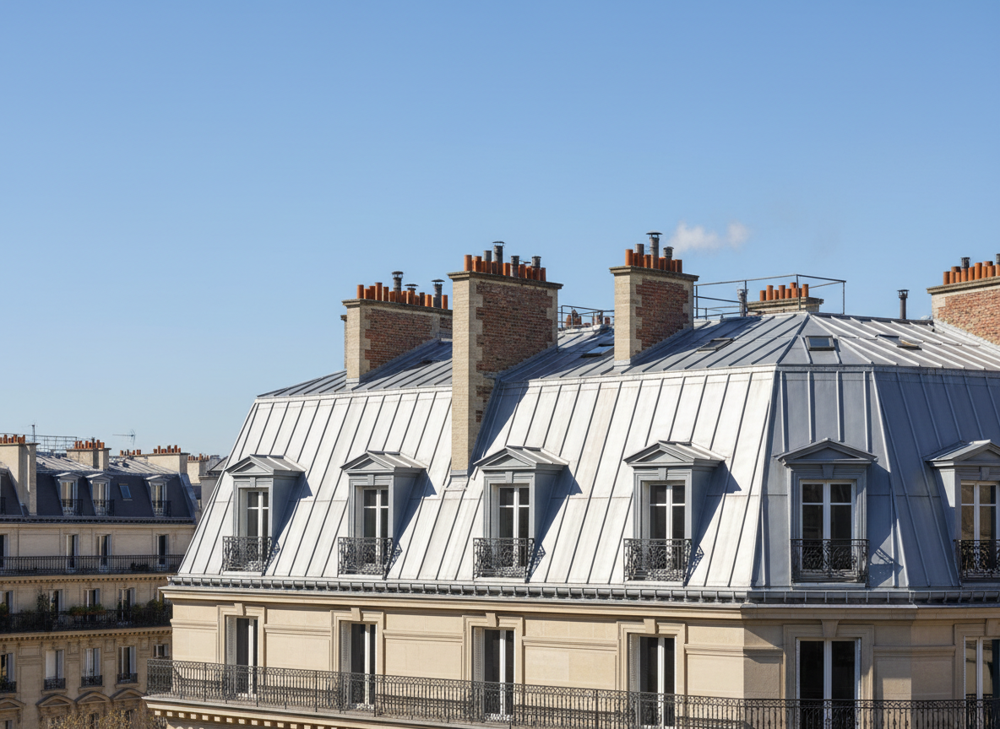
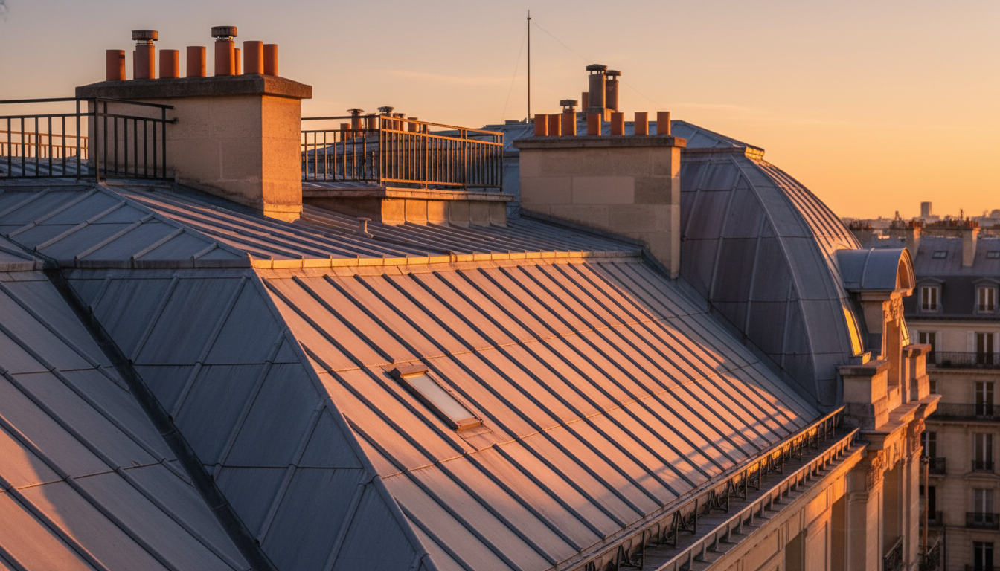
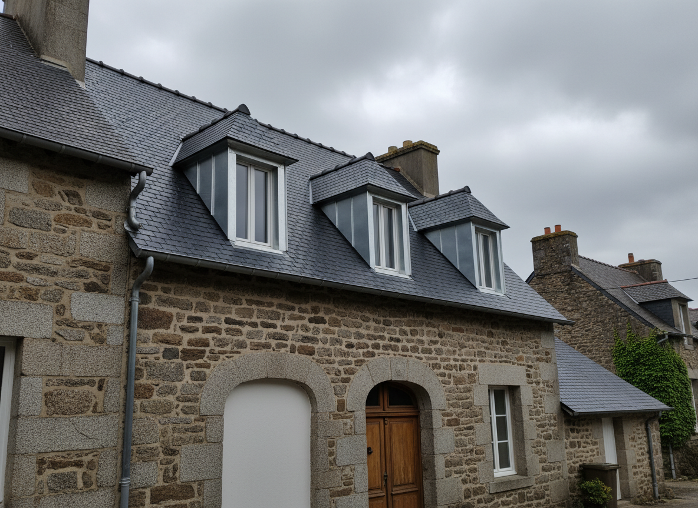
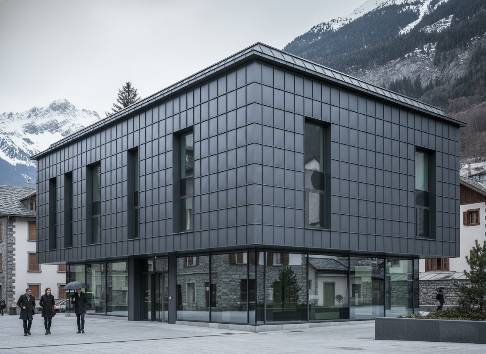

Paris 8e
Toiture zinc — Immeuble haussmannien
Rénovation complète de la couverture en zinc et reprise des lucarnes sur immeuble classé.
Avant
Après
Scrollez pour lancer la rénovation
Un savoir-faire forgé chez les Compagnons du Tour de France, au service de vos toitures les plus exigeantes — des monuments historiques aux résidences contemporaines.

Nos expertises
Des fondations de votre charpente jusqu'aux finitions de zinguerie, nous maîtrisons chaque étape pour des toitures qui traversent le temps. Formé par les Compagnons du Tour de France et aguerri par des chantiers sur monuments historiques classés, notre équipe vous garantit un travail d'exception conforme aux règles de l'art et aux normes en vigueur.

Conception, fabrication et pose de charpentes traditionnelles et contemporaines, en bois massif, lamellé-collé ou fermettes. Nous intervenons aussi bien sur les constructions neuves que sur la restauration de charpentes anciennes endommagées par l'humidité, les insectes ou le temps.
Réalisation et rénovation de toitures en zinc à joint debout, tuiles mécaniques ou plates, et ardoises naturelles. Chaque couverture est pensée pour durer, résister aux intempéries et sublimer l'architecture de votre bâtiment.
Chéneaux, noues, gouttières, dauphins, habillages de rives et de pénétrations, travaillés avec précision en zinc, cuivre ou plomb. Chaque pièce est façonnée sur mesure pour une évacuation parfaite des eaux pluviales et une finition irréprochable.
Intervention sur immeubles haussmanniens, bâtiments classés et patrimoine ancien, dans le respect des prescriptions des Architectes des Bâtiments de France. Reprise de lucarnes, corniches, souches de cheminées et ornements de toiture.
Mise en œuvre de membranes d'étanchéité, écrans sous-toiture et isolation thermique par l'extérieur (sarking) ou l'intérieur, pour améliorer durablement le confort et la performance énergétique de votre habitation tout en réduisant vos factures.
Diagnostic précis, bâchage d'urgence, réparation ciblée et sécurisation complète de votre toiture en cas d'infiltration, de fuite, de tempête ou de grêle. Nous intervenons rapidement pour limiter les dégâts et remettre votre couverture en état.
Portfolio

Rénovation complète de la couverture en zinc et reprise des lucarnes sur immeuble classé.
Remplacement de la couverture, isolation et création de nouvelles sorties de toit.

Habillages métalliques et évacuation sur un bâtiment contemporain en zone alpine.
Intervention sur plusieurs toitures zinc mitoyennes avec reprise d'étanchéité complète.
Témoignages
« RL ZINC a su redonner tout son cachet à la toiture zinc de notre immeuble haussmannien. Chantier propre, délais tenus et communication impeccable. »
« Un partenaire fiable sur les lots couverture et zinguerie, capable de gérer des détails techniques complexes et de proposer des solutions élégantes. »
« Intervention rapide et soignée sur plusieurs immeubles de notre parc. Les copropriétaires ont apprécié la qualité des finitions. »
À propos
Fondateur formé par les Compagnons du Tour de France, RL ZINC perpétue une tradition d'excellence transmise de maître en apprenti depuis des siècles. Cette formation exigeante — des années de perfectionnement sur des chantiers d'exception à travers la France — garantit un niveau de savoir-faire rare dans les métiers de la toiture.
Fort de plusieurs années d'expérience sur des monuments historiques classés, notre équipe maîtrise les techniques ancestrales comme les plus modernes : couverture en zinc à joint debout, charpentes traditionnelles, zinguerie ornementale, rénovation de lucarnes et de corniches dans le respect des prescriptions des Architectes des Bâtiments de France.
Aujourd'hui, nous mettons cette expertise au service de tous — particuliers, architectes et collectivités — à Rennes, Paris, Grenoble et sur l'ensemble du territoire français.
Notre méthode
Nous analysons votre projet, réalisons un diagnostic précis et vous proposons un devis détaillé et transparent.
Nos équipes interviennent avec rigueur et savoir-faire, dans le respect des délais et de votre environnement.
Réception du chantier, vérification finale et garantie décennale pour votre totale tranquillité.
Contact
Rénovation, construction neuve ou urgence — expliquez-nous votre situation et recevez un retour personnalisé sous 48h.